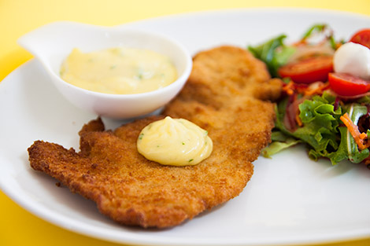

Turkey Panados

Description
Delicious way to eat turkey slices in a fried way
Ingredients
- 800g of turkey steaks
- 4 minced garlic cloves
- juice of 1 lemon
- Salt q.b.
- 3 tablespoons of breadcrumbs
- salt
- pepper q.b.
- 2 eggs scrambled with a fork
- 240g of breadcrumbs
- Frying oil
Steps
- Season the steaks with salt, pepper, chopped garlic and the juice of 1 lemon.
Involve very well. Let marinate for 30 minutes.
- Pass the steaks in beaten egg and breadcrumbs.
Fry the steaks on both sides in hot oil.
After the steaks are fried, remove them to a plate with absorbent paper.
- Serve the turkey breadings with the garlic and parsley mayonnaise and a salad.